Cadastro de MPU - SISEG
Para cadastrar a Medida Protetiva de Urgência - MPU no SISEG se faz necessário que haja uma ocorrência vinculada.
- Link para acesso ao SISEG
- Pesquisar ocorrência
- Cadastrar MPU
- Edição de Ocorrência
- Cadastro de Ocorrência
- Programação Operacional
- Visita pelo Mobile
- Baixar Instrução em PDF
Cadastro de MPU no SISEG
- Link para o Sisetema SISEG
https://emergencia.sesdec.ro.gov.br/sade/sade/public/index.php/login - Link do sistema SISEG Treinamento
https://treinamento.emergencia.sesdec.ro.gov.br/sade/sade/public/index.php/login
- Utilizando a senha do perfil MPU acessar o SISEG
- Após acessar o menu CADASTROS - Opção Medida Protetiva de Urgência
- Após localizar a ocorrência e clicar no ícone Gerar MPU


- Realizar o preenchimento de todos os campos da tela seguinte, com os dados da Medida Protetiva e anexar o arquivo em PDF.
-
Caso não aparecer o nome do Agressor
-
Tela de edição da OCORRÊNCIA
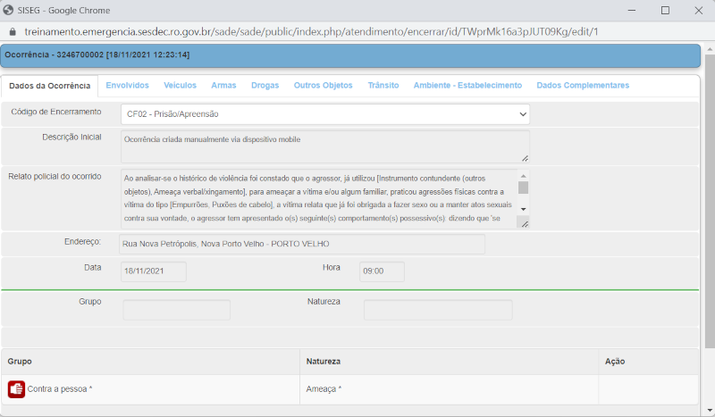
*Realizar pesquisa pelo PROTOCOLO da ocorrência ou pelo nome do ENVOLVIDO.

* É possível anexar mais de um arquivo PDF para a mesma Medida Protetiva, no entando tem que salvar primeiro as informações e depois acessar novamente a Medida para anexar um segundo arquivo PDF.
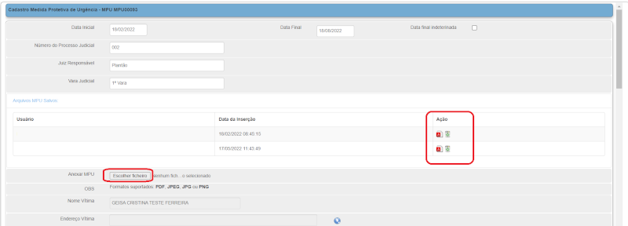
Nos campos destinados as informações para o Agressor:
Restrição - Grau de Risco - Requerido notificado - Condição do Agressor e Mandado de Prisão Agressor.
Deve-se selecionar a opção correspondente na caixa de seleção
e após clicar em adicionar
 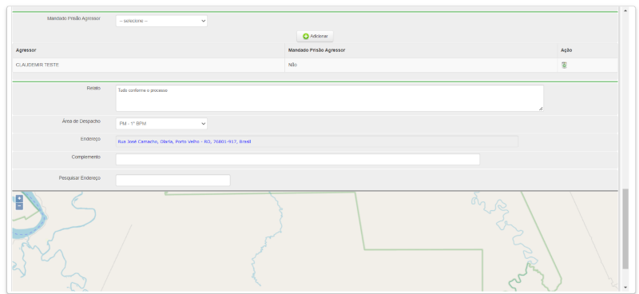
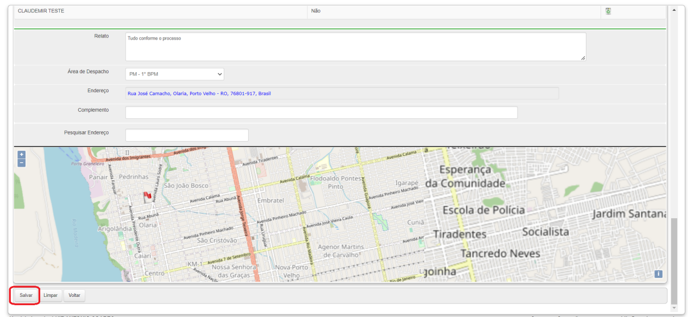
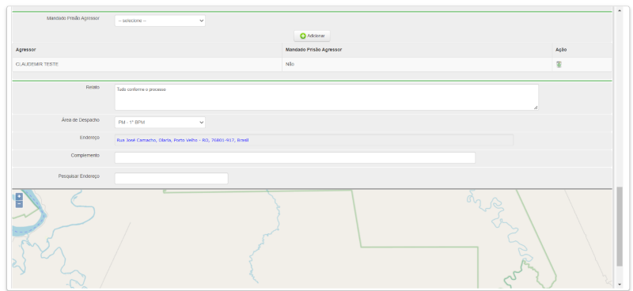
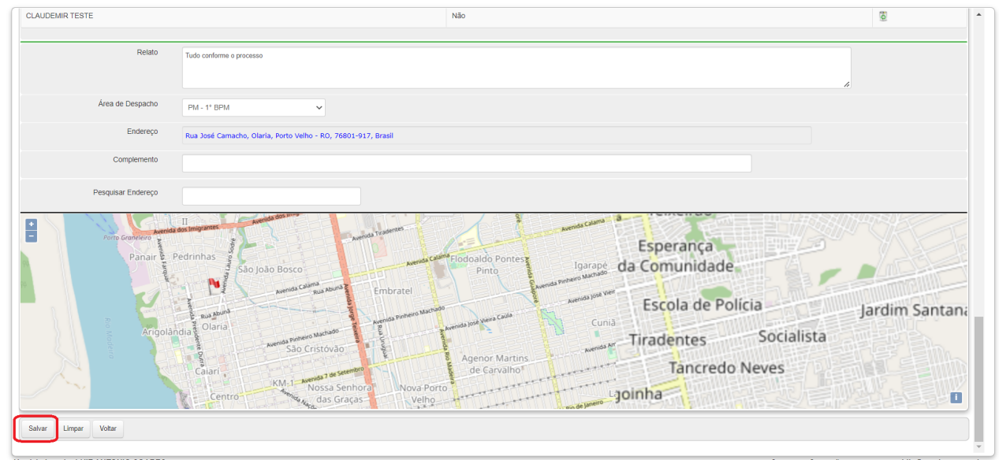 Salvar as informações.
Editar ocorrência para MPU no SISEG
Deve-se retornar a tela anterior “Cadastro Medida Protetiva Urgência - MPU” para fazer a edição da OCORRÊNCIA
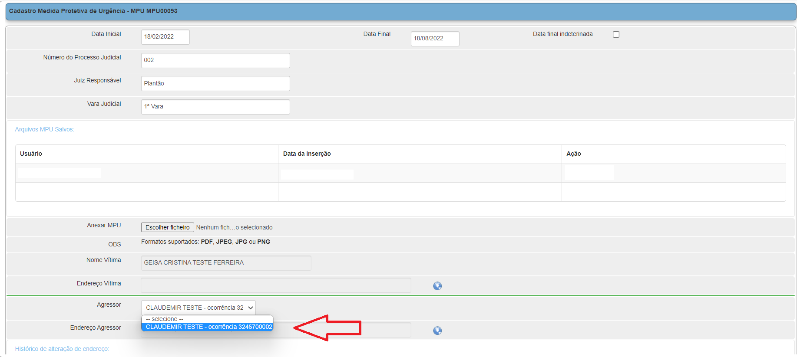
Na tela “Cadastro Medida Protetiva Urgência - MPU” localizar a OCORRÊNCIA e clicar no ícone
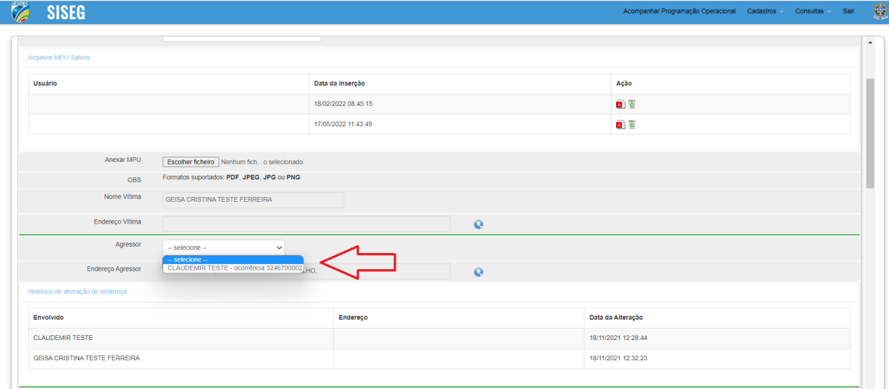
1º Alterar o Código de Encerramento para um diferente do que está salvo podendo ser o “CF-24-Inválido” para permitir edição dos dados da OCORRÊNCIA.
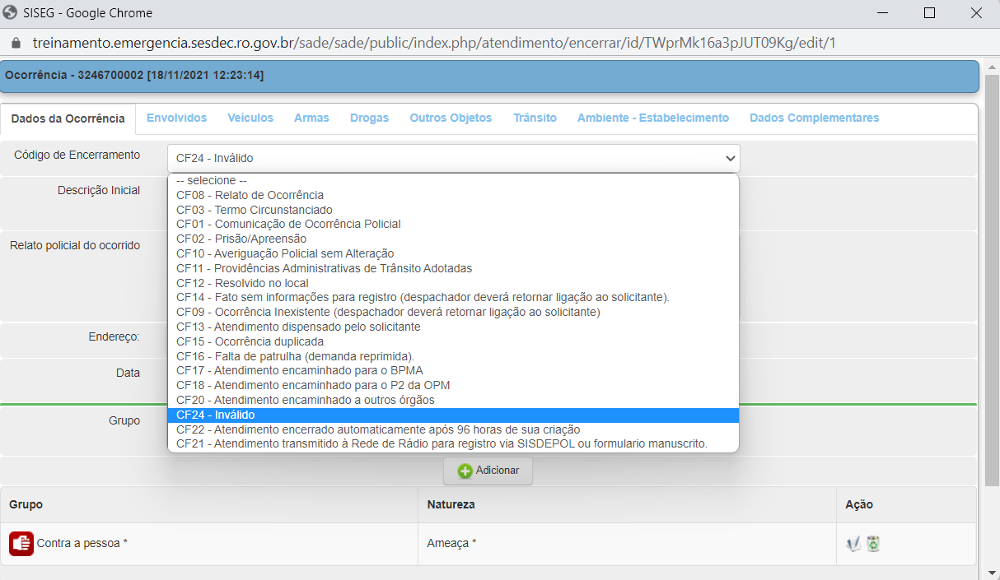
2º Acessar o Menu ENVOLVIDOS
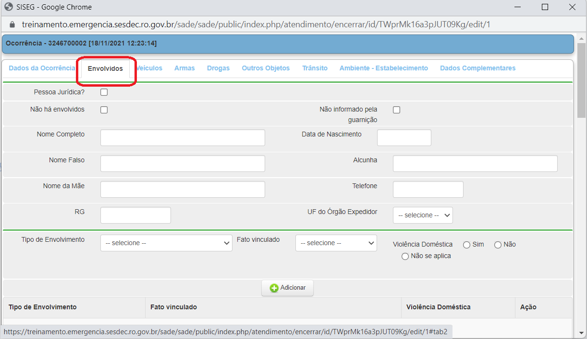
Rolar a tela até o final
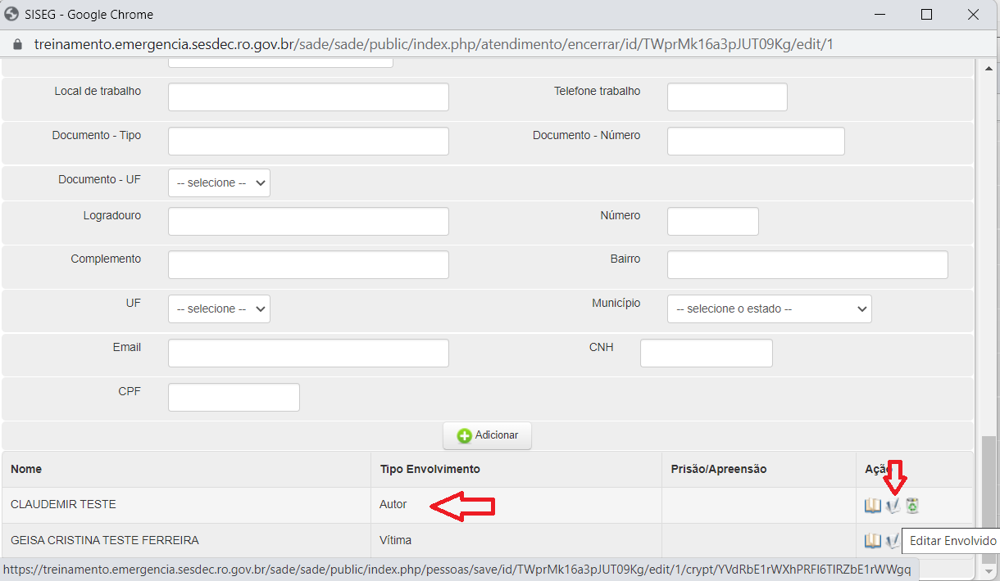
Clicar no ícone
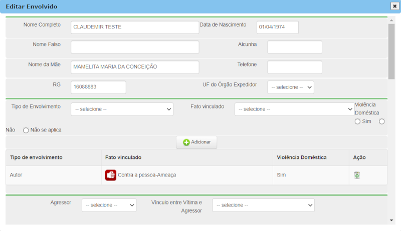
Após acrescentar os dados necessárias rolar a tela até o final e salvar as informações.
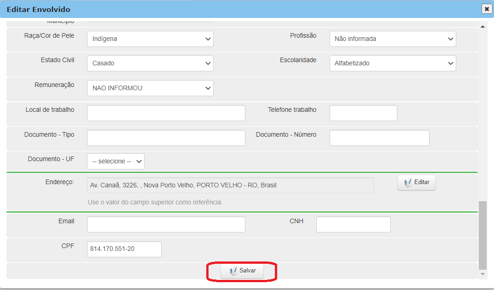
Pronto foram adicionado as informações dos Envolvidos, fechar a janela no X.
*** Importante não é necessário retornar para a aba Dados da Ocorrência ***.
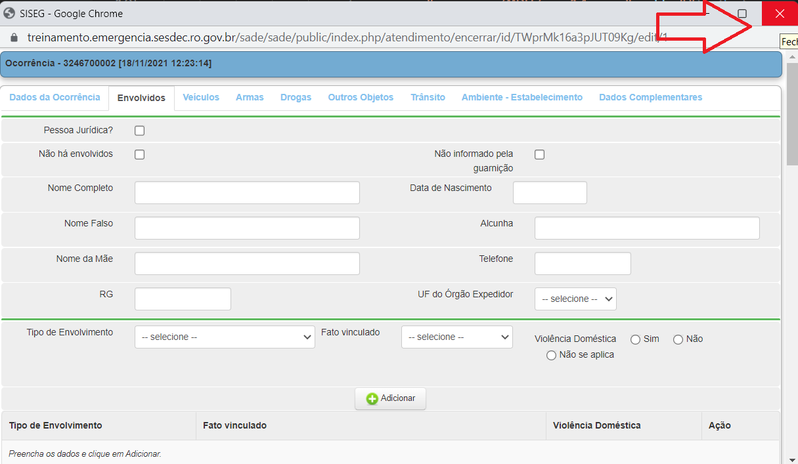
MEDIDAS PROTETIVAS QUE NÃO POSSUEM OCORRÊNCIA
Deve-se criar uma ocorrência para que se possa anexar uma medida protetiva e liberar a programação operacional das visitas.
Com a senha do perfil DESPACHADOR acessar o SISEG
Clicar no menu “Gerar Ocorrência”
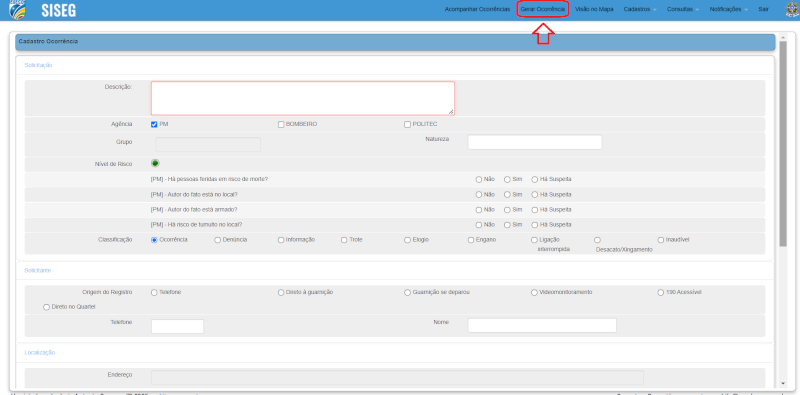
Fazer o prenchimento dos seguinte campos
Descrição = Medida Protetiva de Urgência - MPU
Agência = PM
Natureza = lesão Corporal
Marcar os campos de nível de risco =
Classificação = Ocorrência
Local = Direto no Quartel
Nome = Analista
Endereço = dos envolvidos
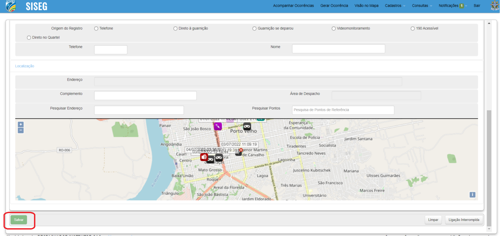
Salvar informações
* Anotar o número do protocolo da OCORRÊNCIA
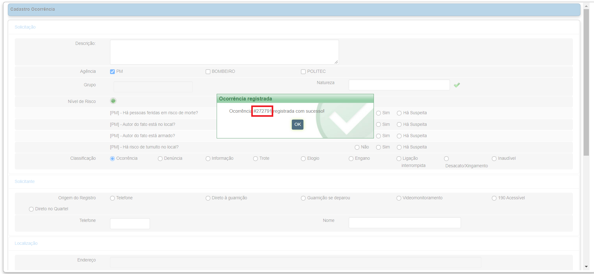
ENCERRAMENTO
Após cadastrar a ocorrência ir para o menu Acompanhar Ocorrências, localizar o protocolo correspondente e clicar em "Alterar para pendente"
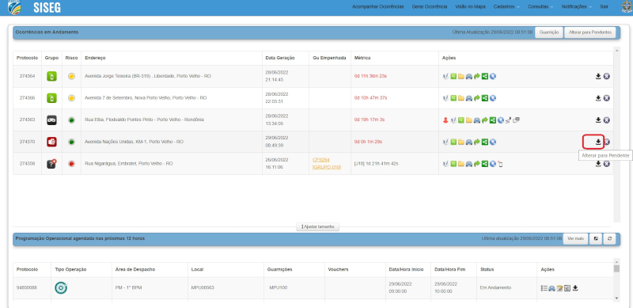
Após acessar o menu Alterar para pendente
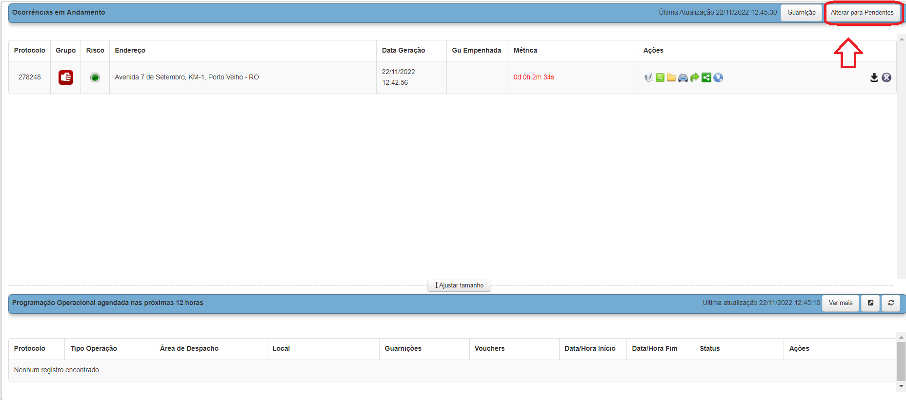
clicar no ícone
 para fazer o encerramento.
para fazer o encerramento.
DADOS DA OCORRÊNCIA - CAMPOS
Código de Encerramento = Usar o CF 25 - Dados cadastrados de outros sistemas/instituições;
Relato policial = usar texto padrão “Cadastro de MPU”;
Natureza = selecionar lesão corporal;
Após clicar no ícone
ENVOLVIDOS - CAMPOS
Preencher primeiro as informações do autor.
Nome Completo:
Data de nascimento:
Telefone:
RG: / UF Órgão Expedidor: se possuir a informação
Tipo de Envolvimento: Autor
Fato Vinculado: lesão corporal
Violência doméstica: marcar a opção sim
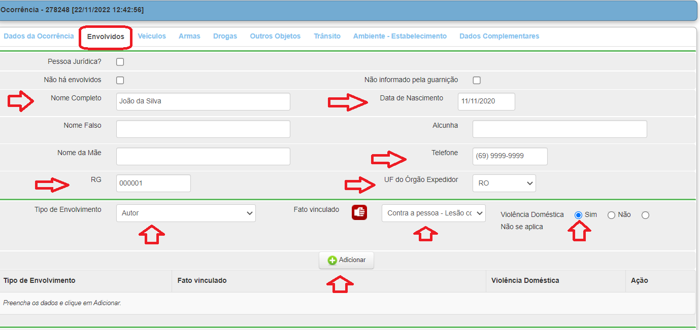
O campo vínculo com o Agressor só é preenchimento para a Vítima.
Local de condução = outro locais
Prisão/apreensão:
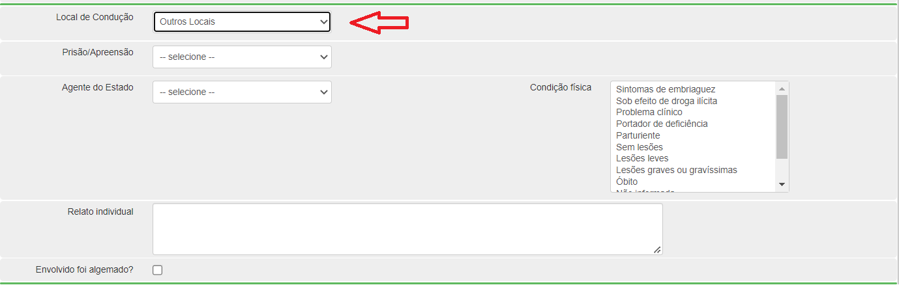
** Campos obrigatórios
Sexo:
Raça cor da pele:
Endereço:
CPF: deve ser preenchido para habilitar o cadstro da MPU
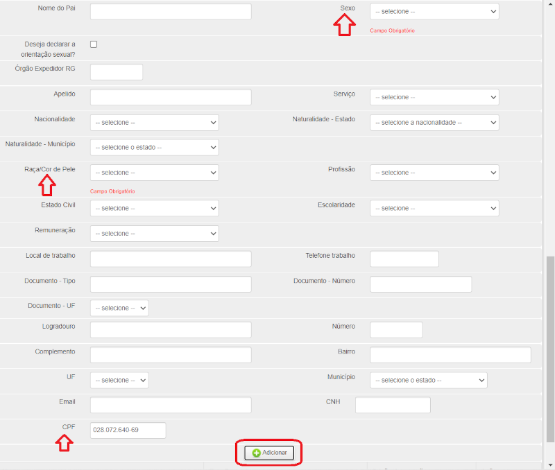
Após adicionar o Autor voltar ao inicio da página para adicionar a Vítima preenchendo os mesmos campos preenchidos para o autor.
Acrescentando a informação do vínculo com o Agressor.
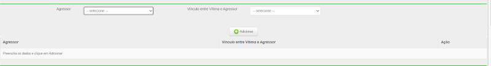
Com a vítima adicionada na Ocorrência clicar na aba "Dados da Ocorrência" para finalizar clicando no ícone no canto inferior direito.
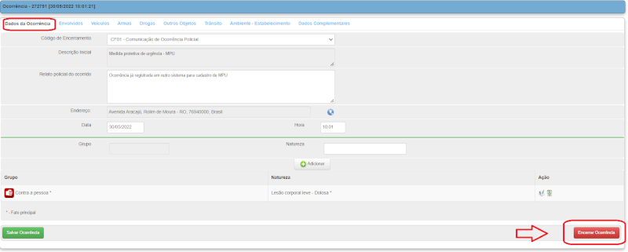
Com isso a ocorrência saíra da tela de ocorrências em andamento e estará disponível para cadastro da MPU no perfil MPU.
PROGRAMAÇÃO OPERACIONAL
Para acessar Link de Vídeo da instrução sobre a Programação Operacional: "Clique Aqui"
Para fazar a Programação faz necessário ter o número da MPU que vai ser realizada a visita.
*Para fazer a Pesquisa
Entrar no menu Cadastro / Medida Protetiva de Urgência
Digita-se MPU no campo do número da MPU
Seleciona a Área de Despacho
e cliqua-se em Pesquisa
Podendo ser realizada também pesquisa pelo PROTOCOLO da ocorrência ou pelo nome dos ENVOLVIDOS.
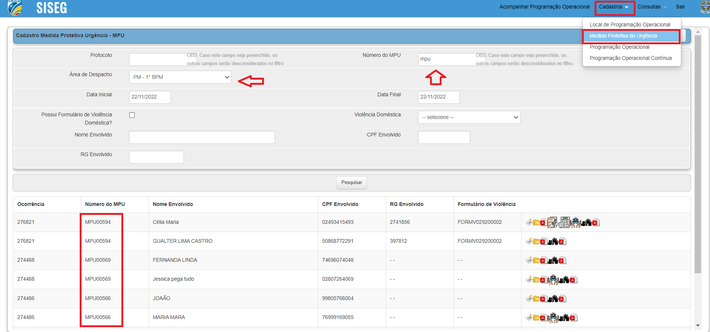
Para inciar a Programação no sistema SISEG entrar no menu “CADASTROS” - “Programação Operacional”
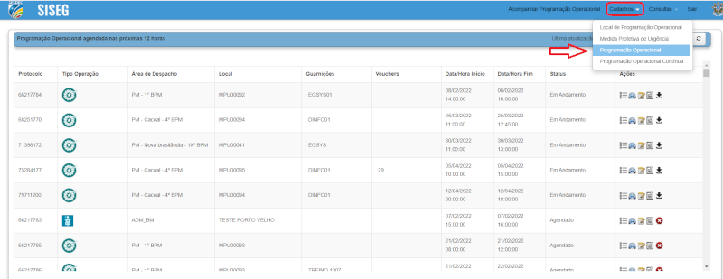
Rolar a página até o final e clicar na opção “NOVO”
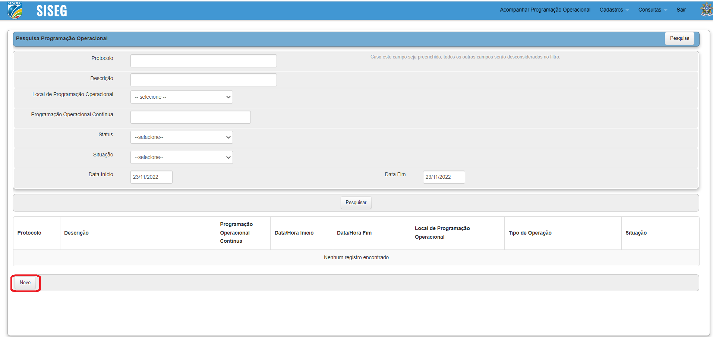
Preencher todos os campos
Descrição: Colocar o nome da Patrulha “Patrulha Maria da Penha 1º BPM”;
Medida Protetiva de Urgência: Pesquisar para qual MPU será realizada a visita;
Local da Programação operacional: Área de atuação da patrulha;
Tipo de Operação: Visita MPU;
Data ínicio: / Data fim:
Hora inicial: / Hora final:
Salvar
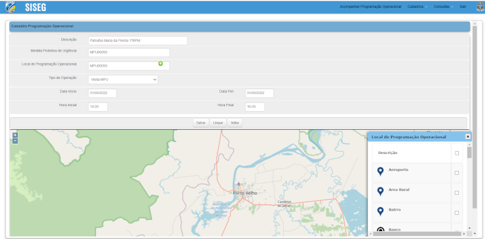
Ao salvar retornar-se para a tela de Pesquisa Programação Operacional
Deve-se localizar programação para gerenciar a guarnição de atendimento.
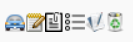
1º ícone - Gerenciar guarnição
2º ícone - Visualizar observações
3º ícone - Visualizar anexos / observações
4º ícone - Visualizar detalhes
5º ícone - Editar programação
6º ícone - Exclui a programação
Vamos clicar no ícone para empenhar guarnição para realização da visita a MPU.
Na tela seguinte pesquisa-se a guarnição podendo se por “VOUCHER” ou pelo “número da guarnição”.
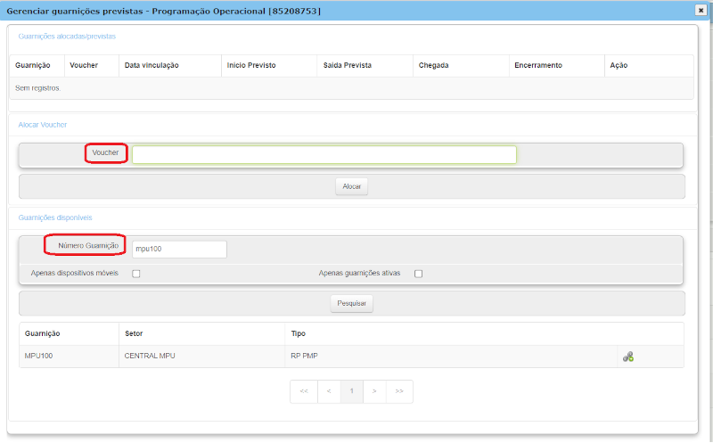
Clicar no ícone 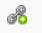gerenciar tipo de alocação.
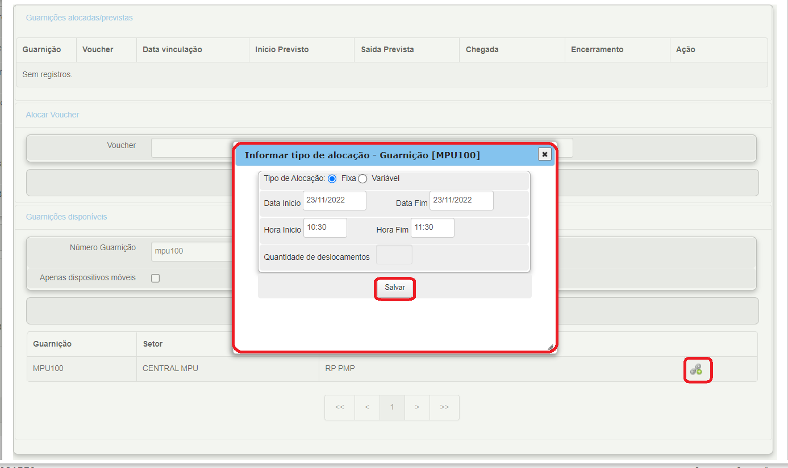
Definir as informações e salvar.
Após salvar já está alocada uma guarnição e vai aparecer na tela as informações.
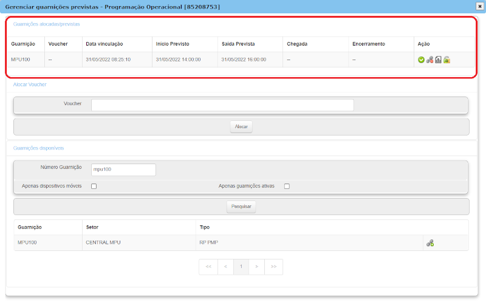
Com as seguintes opções 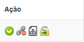
1º ícone - Informar chegada
2º ícone - Desalocar guarnição 
3º ícone - Programação não executada 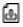
4º ícone - Ativar dedicação exclusiva - nesse caso a patrulha não recebe solicitações do CICC
Não sendo necessário fazer alterações.
PARA CANCELAR UMA PROGRAMAÇÃO OPERACIONAL
Quando uma programação não for realizada, pode-se desalocar a guarnição empenha através do SISEG.
Após localizar a programação desejada clicar no 1º ícone - “Gerenciar guarnição ”
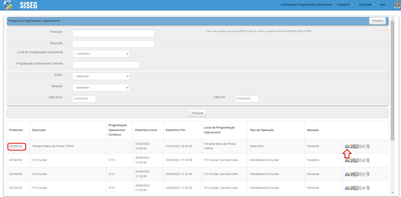
Em seguida clicar no ícone “2º ícone - Desalocar guarnição ”
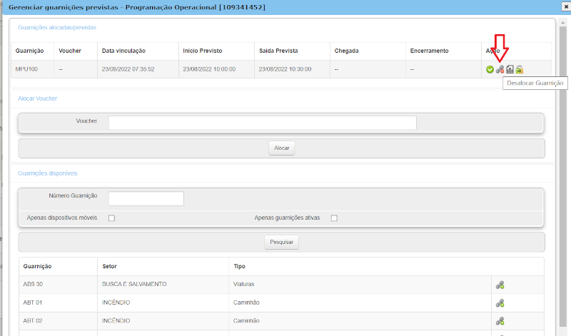
Após clicar no X no canto superior direito da janela e retorna para a tela anterior.
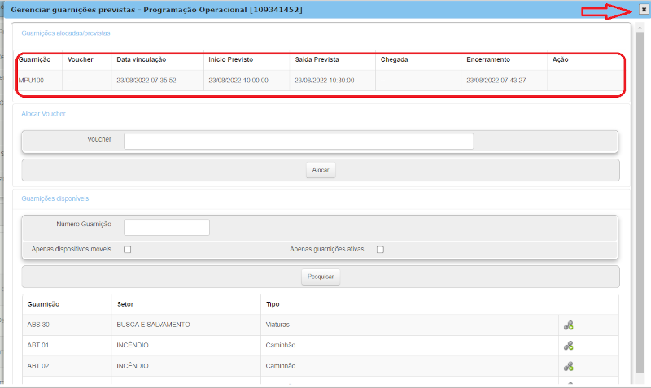
A programação ainda permanece cadastrada no entanto não está mais empenhada para uma guarnição.
Para excluir a programação, localize a programação desejada e clique no ícone - “Deletar ”
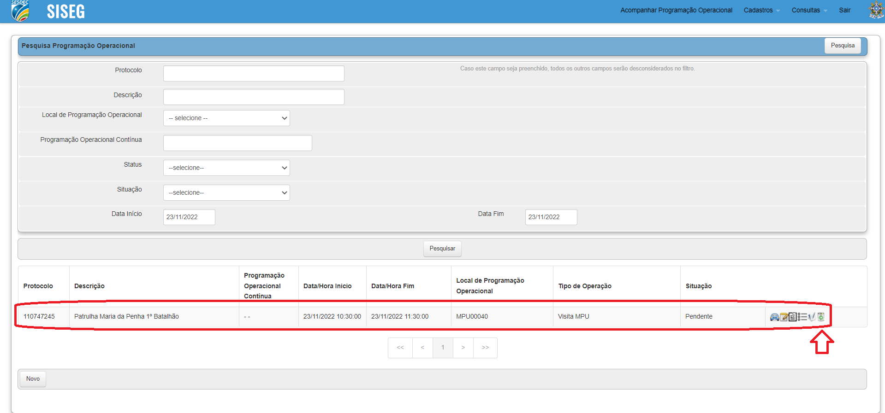
VISITA PELO MOBILE
Acessar o Quadro de Avisos
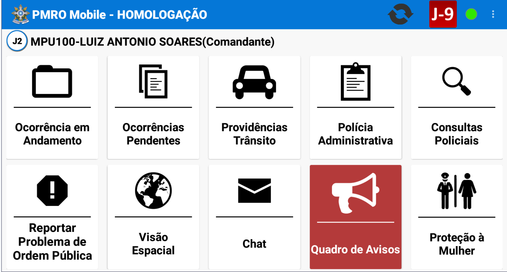
Programação Operacional
Vai aparecer a programação disponível
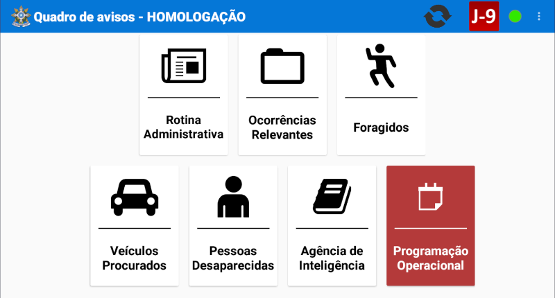
Tocar em cima das informações para abrir a nova tela.
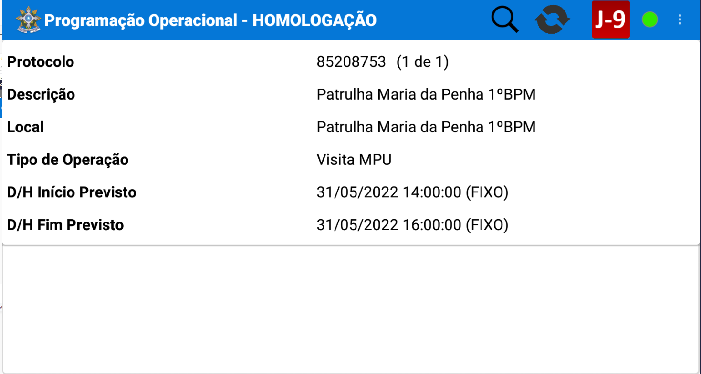
Fazer a verificação dos detalhes da MPU
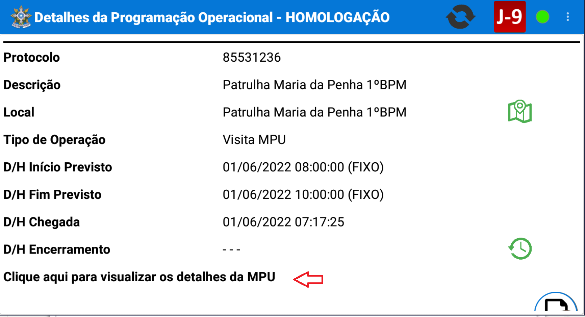
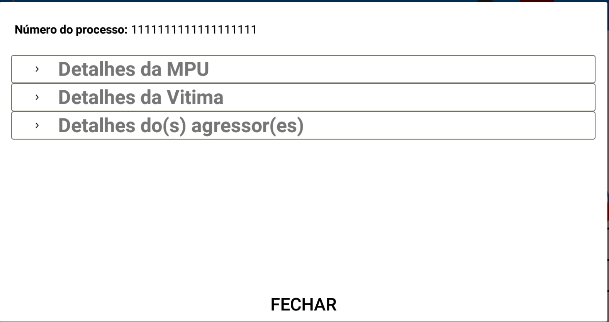
Fechando a tela retorna-se a visita
Clicar no primeiro ícone para dar a chegada no local e habilitar a visita

Clicar no texto indicado "Clique aqui para registrar visita da MPU"
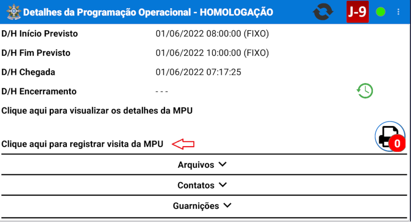
Para abrir as perguntas referentes a visita.
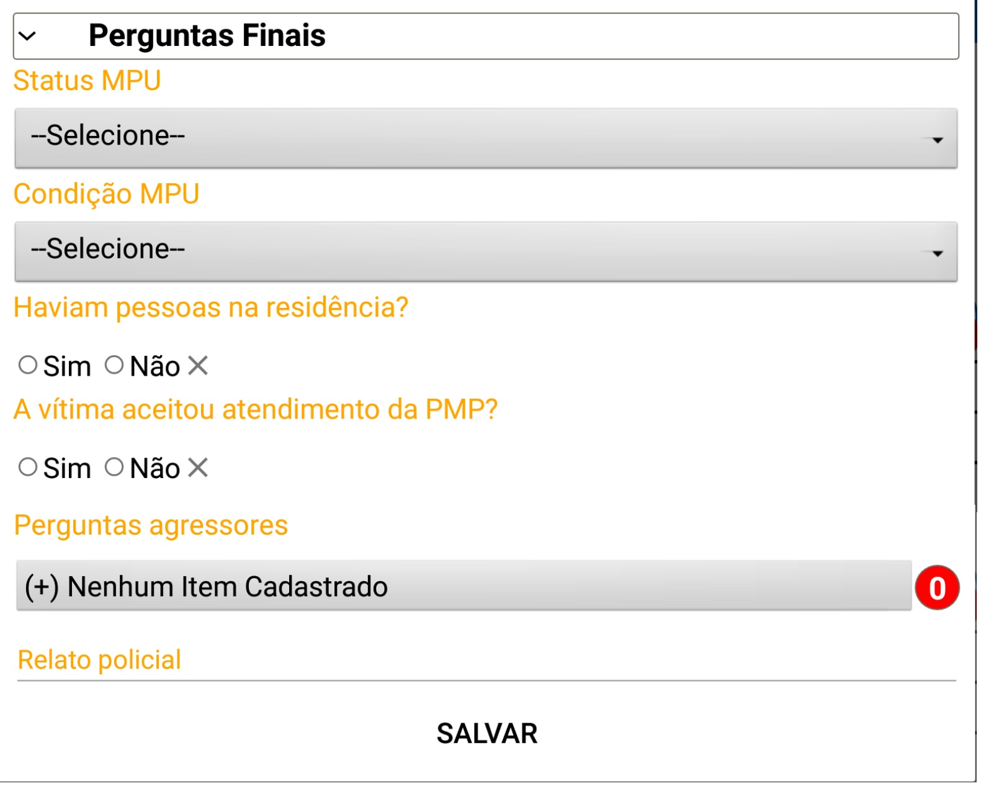
No STATUS MPU terá as seguintes opções:
Status MPU
S01 - MEDIDA PROTETIVA ATIVA” (esse status será automático sempre que houver cadastro da MPU no sistema até que essa condição seja alterada via web ou via pmro mobile).
“S02 - MEDIDA PROTETIVA ATIVA COM SOBREAVISO” (esse status será alterado quando após uma visita a Guarnição indique que a MPU está sendo cumprida e não apresenta indícios de risco para vítima, quando estabelecido este Status a medida saíra do rol de MPUs disponíveis para empenho numa programação operacional)
“S03 - MEDIDA PROTETIVA REVOGADA POR SOLICITAÇÃO DA VÍTIMA” (esse status será alterado quando a vítima tiver solicitado a retirada da MPU para o Tribunal de Justiça, poderá ser alterado via web ou via pmro mobile, este Status a medida saíra do rol de MPUs disponíveis para empenho numa programação operacional).
No CONDIÇÃO MPU terá as seguintes opções:
Condição MPU
“C02 - MPU NÃO LOCALIZADA” (essa condição será informada pelo efetivo em campo ou via web quando não for possível localizar a vítima quando do comprimento de uma programação operacional de VISITA VÍTIMA DE MPU, toda MPU com essa condição deverá cair na caixa de entrada do usuário do sistema “Analista de Inteligência” realizar atualização dos dados da MPU, exige apenas preenchimento do campo relato policial).
“C03 - MPU VISITA SEM SUCESSO” (essa condição será informada pelo efetivo em campo ou via web quando não for possível localizar a vítima por não estar em sua residência, toda MPU com essa condição deverá voltar a fila de MPUs disponíveis para novo empenho em uma programação operacional, exige apenas preenchimento do campo relato policial).
“C04 - MPU VISITA COM SUCESSO” (essa condição será informada pelo efetivo em campo ou via web quando for realizado contato com a vítima, exige preenchimento de todos os campos).
No PERGUNTAS AGRESSOR, selecionar o nome do Agressor e responder as opções:
Após clicar no canto superior direito para salvar as informações do Agressor.
Se tiver mais de um agressor acrescentar o segundo agressor, caso contrário retornar para a tela anterior.
Incluir o Relato policial da visita.
Salvar as informações.
Realizar as assinaturas.
Confirmar as informações. Clicar novamente no botão salvar.
Após clicar no ícone
onde será informado o horário do encerramento da VISITA.
Voltar para a tela anterior encerrando o atendimento.